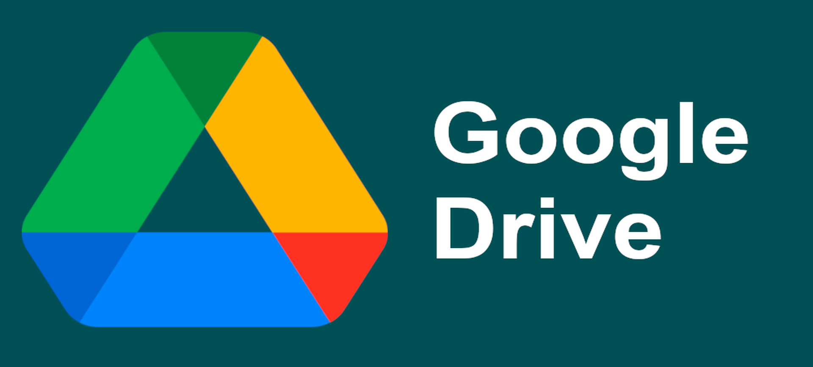

¿Cómo abrir y buscar en el repositorio?
En la mayoría de los sistemas basta con abrir el archivo con doble clic. Solo Android necesita un paso extra por seguridad. Elige tu caso:
📱 Estás en Android
Android requiere un paso extra. Aquí está la explicación y el tutorial completo con la app.
⚠️ Android bloquea la apertura directa del archivo local
Los navegadores de Android (Chrome, Firefox, Edge, Brave, Samsung Internet, Opera…) bloquean por seguridad el acceso a archivos locales mediante file://. Lo probamos de todas las formas posibles y no es posible abrir el index.Html con doble toque como en una PC. No es un fallo tuyo ni del repositorio: es una restricción del sistema operativo.
Por eso tienes dos caminos en Android:
http://127.0.0.1:8080. Es la solución oficial a la restricción de Android.📥 Descarga la app para Android
Tres vías para descargar Simple HTTP Server / SHTTPS. Google Play es la más cómoda.

ℹ️ Sobre Uptodown y los XAPK
No encontramos una ficha oficial de esta aplicación en Uptodown. Además, algunos espejos ofrecen el formato XAPK, que puede requerir un instalador extra. Por eso priorizamos aquí los enlaces que entregan el APK directo: se instala con doble toque, activando antes “Instalar apps de origen desconocido” para tu navegador o gestor de archivos.
🪜 Configura la app paso a paso
Sigue este orden y en pocos minutos tendrás tu repositorio funcionando sin internet.
base_consultora_uo a la memoria interna, por ejemplo en Descargas/base_consultora_uo. El index.Html debe quedar en la raíz de esa carpeta, junto a sus subcarpetas (css, js, imagen, etc.).
base_consultora_uo con el explorador que se abre y confirma con “SELECT THIS FOLDER”.
http://127.0.0.1:8080 (o http://localhost:8080). Anótala o mantenla visible.
http://127.0.0.1:8080

http://127.0.0.1:8080 y el repositorio cargado
💡 Consejo
Si solo quieres consultar el repositorio y tienes internet, la Opción A es la más rápida. Guarda la Opción B para cuando estés sin conexión o quieras trabajar con el repositorio en el teléfono.
🖥️ Windows, macOS, iPhone/iPad, Linux, Solaris y Unix
En estos sistemas no hay que instalar nada: el navegador abre el archivo directamente.
✅ Abre el index.Html con doble clic
En Windows, macOS, Linux, Solaris, BSD y demás variantes Unix, los navegadores permiten el acceso local sin restricciones. Usa cualquiera de estas formas:
- Doble clic sobre
index.Html. Se abrirá con tu navegador predeterminado. - Arrastrar el archivo sobre una ventana del navegador ya abierta.
- Clic derecho → Abrir con → el navegador que prefieras (Chrome, Firefox, Edge, Safari…).
- O escribir en la barra de direcciones:
file:///C:/ruta/a/tu/carpeta/index.Html(Windows) ofile:///home/usuario/ruta/index.Html(Unix/Solaris).
En iPhone o iPad: abre la app Archivos, toca el index.Html y verás la vista previa. Para el navegador, usa Compartir → Abrir en Safari.
ℹ️ Si algo no carga en local
Revisa que hayas copiado todas las subcarpetas del repositorio (css, js, imagen, index…) junto al index.Html. Si falta alguna, el navegador mostrará la página sin estilos o sin datos.
🔍 Cómo realizar las búsquedas (local o en línea)
Las búsquedas son idénticas en ambos modos; solo cambia cómo abres el repositorio.
Ctrl + F (Windows/Unix) o Cmd + F (macOS). En Android, iPhone o iPad usa el menú “Buscar en la página” del navegador.ℹ️ ¿Los resultados son diferentes en local y en línea?
No. El repositorio es exactamente el mismo en ambos modos. Lo único que cambia es cómo lo abres: en línea desde la URL de GitHub Pages, o en local desde http://127.0.0.1:8080 con Simple HTTP Server en Android. Los datos, las tesis, la búsqueda y los filtros se comportan igual.
Si en local notas que algo no carga (por ejemplo, imágenes o estilos), revisa que hayas copiado todas las subcarpetas del repositorio a la carpeta raíz que elegiste en la app, no solo el index.Html.